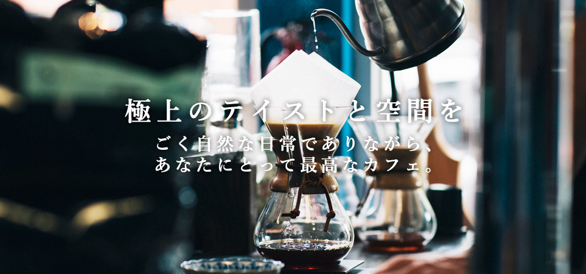

「きびる」とは「結ぶ」を意味する九州の方言です。
大通りから少し離れた路地裏にあるお店は、都会にあるとは思えないほどの静けさに満ちています。
カウンター席やテーブル席、ソファー席など お気に入りの場所でおくつろぎください。
また、店内にはギャラリースペースもご用意。
珈琲の香りただよう中、人が集い そして 人と人とを繋げる場でありたい、それが「Kibiru Cafe」なのです。
「仲間にして」という意味の方言「かたして」という名を冠したギャラリースペースでは、アートやカルチャーなどの各種イベントを開催しています。
また、ドリップコーヒーの美味しい淹れ方などを体験いただくワークショップなども行なっています。
ギャラリースペース「Katashite」で、仲間の輪を広げて行きましょう！